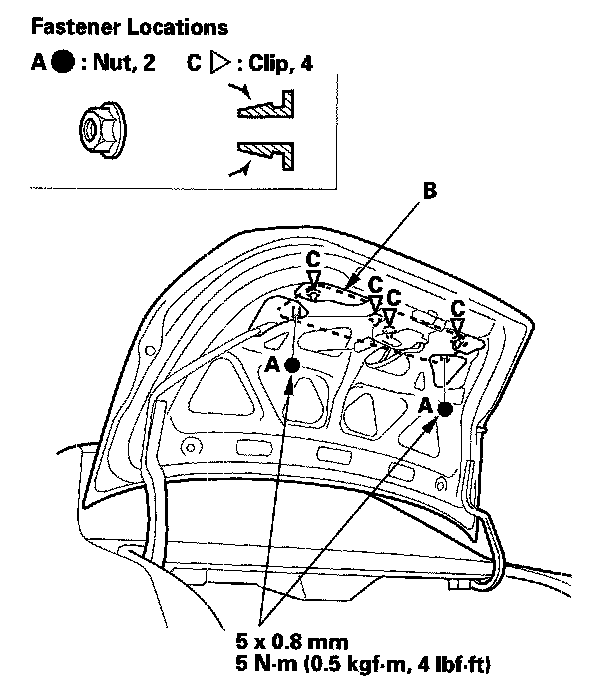
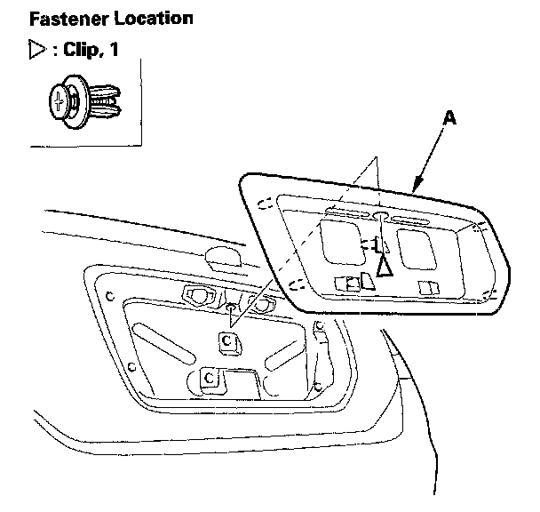
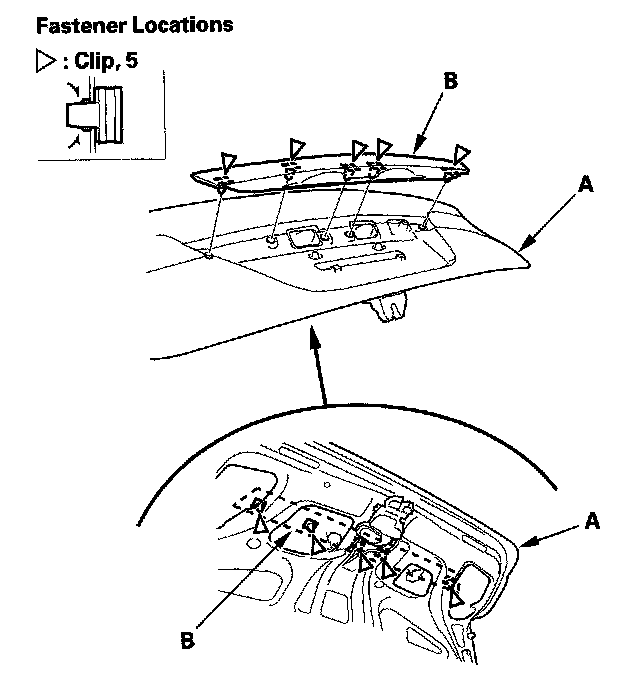

License Plate Frame: Service and Repair
Rear License Trim Replacement2-door
NOTE: Put on gloves to protect your hands.

1. From inside the trunk lid, remove the nuts (A) securing the rear license trim (B), and push out the clips (C).

2. Gently close the trunk lid, release the clip, and pull the rear license trim (A) out to detach the clips, then remove the trim. Take care not to scratch the trunk lid.
3. Install the trim in the reverse order of removal, and note these items:
- Check if the clips are damaged or stress-whitened, and if necessary, replace them with new ones.
- Push the clips into place securely.
4-door
1. If equipped, remove the trunk lid trim.
2. Remove the bolt securing the trunk lid lock cylinder.

3. Detach the clips by pushing it from the hole in the trunk lid (A), then remove the rear license trim (B). Take care not to scratch the trunk lid.
4. Install the trim in the reverse order of removal, and check if the clips are damaged or stress-whitened, and if necessary, replace them with new ones.